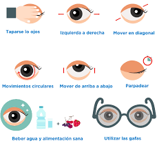
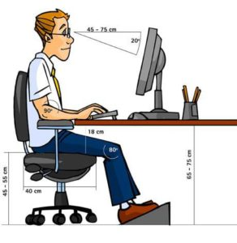
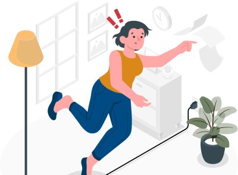

- Riesgos de Seguridad
- Riesgos Ergonómicos
- Riesgos psicosociales
- Riesgos Medioambientales
- Riesgos Eléctrico
Medidas preventivas
Son aquellas que eliminan o disminuyen el riesgo en su origen minimizando la probabilidad de que el acontecimiento no deseado se materialice. A continuación hablaremos de algunas medidas preventivas:
Riesgos Ergonómicos: Fatiga Visual
1) Se graduará el brillo y el contraste mediante los mandos de la pantalla.
2) Se colocará la pantalla de tal manera que están situadas paralelamente a ella las fuentes de iluminación.
3) Intentar colocar la pantalla a una distancia superior a los 40 cm respecto a los ojo. Es recomendable usar equipos con pantallas de mínimo 14 pulgadas.
Para más información, puede consultar el siguiente enlace: Salud: Blogs Mapfre
Riesgos Ergonómicos: Fatiga muscular
1) Como regla general, la pantalla debe estar a unos 40 cm y la parte superior de la pantalla a la altura de los ojos.
2) Mantener el cuerpo derecho siempre para prevenir deformaciones en la columna.
3) Cambia de posición con frecuencia para evitar la fatiga física.
4) Espacio de trabajo: La mesa de trabajo debe ser lo suficientemente amplia y espaciosa con unas dimensiones aproximadas de 160 cm de ancho por 80cm de alto y 100 cm de profundidad.
5) La silla debe ser ajustable en altura del asiento e inclinación y altura del respaldo.

Forma correcta de sentarse frente al ordenador
Para más información, puede consultar el siguiente enlace:
GencatPrevencionar.com
Riesgos psicosociales: Estrés y Ansiedad
1) Planifica el tiempo y las tareas a realizar de forma ordenada.
2) Si no tienes claros los objetivos a cumplir, habla con tu responsable para que pueda dirigirse hacia a unos más concretos y definidos.
3) Solicita información y/o formación siempre y cuando lo veas necesario para realizar las tareas.
4) relaciónate con tus compañeros y apóyate en ellos para hablar de cualquier tema que te preocupen y causen una situación de estrés.
5) realiza pausas o cambia de tareas para evitar la monotonía del trabajo.
Para más información, puede consultar el siguiente enlace:
Med Line PlusRiesgos de Seguridad: Caídas y golpes

1) Mantener los pasillos y zonas de paso libres de objetos
2) Mantener el orden y la limpieza en las zonas de trabajo
3) Al usar escaleras debe subirse con precaución, siempre de frente a ellas, tanto al subir como al bajar sosteniéndose con las dos manos.
Para más información, puede consultar el siguiente enlace:
Mutua BalearRiesgos Eléctricos

1) Como norma general la instalación deberá ejecutarse de acuerdo a la reglamentación vigente.
2) La instalación deberá ejecutarse de acuerdo a la reglamentación vigente.
3) Evitar sobrecargar los enchufes con ladrones
4) No viertas líquidos cerca de tomas de corriente, aparatos o cuadros eléctricos.
5) Realizar un mantenimiento periódico de las instalaciones por instalador autorizado.
Para más información, puede consultar el siguiente enlace:
LudusRiesgos Medioambientales: Reflejos de pantallas
1) Cuando detecte reflejos, solicite la colocación de persianas o pantallas difusoras de la luz, pero no coloque nunca el ordenador en una posición que le obligue a trabajar en una postura incómoda.
2) Las pantallas de los ordenadores nuevos disponen de un tratamiento antirreflejos que atenúan el problema. Asimismo, los filtros de pantalla antirreflejos pueden ser útiles, pero sólo cuando no existen reflejos procedentes de focos de luz muy intensa.
3) Es necesario analizar la distribución de focos de luz con relación a los puestos de trabajo para evitar este tipo de problemas, disponiendo, en caso necesario, de los elementos de difusión de la luz adecuados (persianas y cortinas en las ventanas o difusores en los focos de iluminación general).
Para más información, puede consultar el siguiente enlace:
DiscapnetMás información:
La oficina onlineGencat